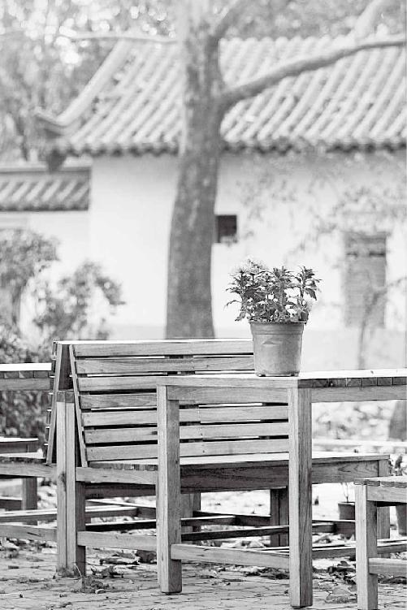
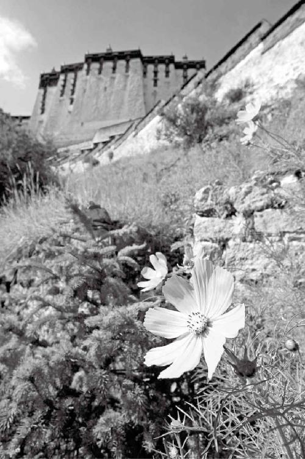
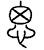
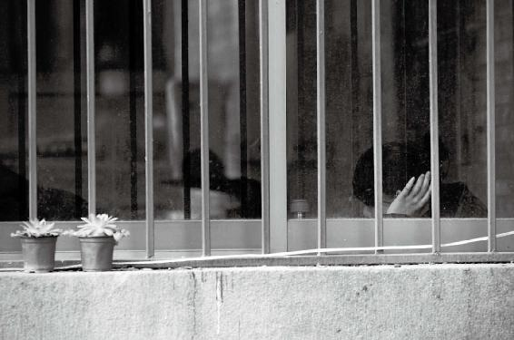

“患”，上面一个“串”，下面一个“心”，就是心有千千结。
“恚嗔之心”怎么出来的呢？就是你有求于外界而来的。道家讲的是内求，要独立。这种独立首先是指靠自己谋生，不依附于任何人，是生活上的独立。
第二点就是经济上的独立。第三，要达到精神上的独立。在独立、不求人的情况下，你不会产生这种恚嗔之心。相反，如果你不独立，没有这种浩然正气的话，你就会产生埋怨、怨恨或者是愤怒等不良的情绪。大家记住，不良情绪会消耗掉你很多精气。
任何事情发生了，都是可以理解、可以接受的，把可以理解放在第一位，可以接受放在第二位，然后淡然一笑，坦然面对，一切不快就过去了。
经文：
其次有圣人者，处天地之和，从八风之理，适嗜欲于世俗之间，无恚嗔之心，行不欲离于世，被服章，举不欲观于俗，外不劳形于事，内无思想之患。
“其次有圣人者，处天地之和，从八风之理”
梁冬：接下来我们说“圣人”，大家常常觉得圣人似乎已经级别很高了，但其实排序是这样的：真人、至人、圣人、贤人，“圣人”只是排在第三位。我觉得只要能做半个圣人就不错了，是吧？
徐文兵：“真人”和“至人”都是能影响到天地变化的人，所谓“提挈天地”。
圣人的层次稍差，他是怎么做的？他学得乖巧，他改变不了自然，就顺应自然。他去找适合自己呆的地方，即“天地之和”的地方。所谓“天地之和”就是说天气下降为雨，地气上升为云，圣人会选择去这种四季分明、既不大旱也不大涝的地方呆着。而沙漠、冰寒地带、盐碱地这种寸草不生的地方，肯定不是他们的选择。
圣人的层次稍差，他是怎么做的？他学得乖巧，他改变不了自然，就顺应自然。
圣人会选择去四季分明、既不大旱也不大涝的地方呆着。
另外，圣人还会选择人和的地方。孔子说过，“危邦不居、乱邦不入”。如果一个国家正在打仗，打得一塌糊涂，你去干嘛？躲还来不及呢！如果你是真人，就深入虎穴去改变这个局势，让人们过上幸福安定的生活。圣人没这个力量，他就只能躲开这种战乱、危乱的地方。
以上所讲的是广义上的“处天地之和”；从狭义上来讲，“处天地之和”就是说要应时而动，顺天和，选择适合自己的居处，也就是古代的风水之说。现在人都把风水当封建迷信看待，其实他就是古人的一种朴素的寻找安居乐业环境的一种理论和说法。
现在人都把风水当封建迷信看待，其实他就是古人的一种朴素的寻找安居乐业环境的一种理论和说法。
梁冬：现在有很多的建筑学院也开风水课了。
徐文兵：其实风水对人的心理影响更大。风水师可能没有改变环境，但却通过一些风水理论改变了你的心理。比如说屋子还是这间屋子，但他通过调整摆设，渐渐改变了你的心理。所以我们应该把风水学当成一种人与天地结合在一起的一种心理学、环境学。
我们应该把风水学当成一种人与天地结合在一起的一种心理学、环境学。
梁冬：我们说人与环境的和谐，大家觉得是科学，而说人与天地，他就觉得你有玄虚，所以把握文字真的很有意思。
徐文兵：所以“处天地之和”是一门大学问，是一门讨巧的、乖巧的学问。我觉得我们这些凡夫俗子应该去学一学怎么去找“天地和”“人和”的地方呆着。
凡夫俗子应该去学一学怎么去找“天地和”“人和”的地方呆着。
梁冬：何为“从八风之理”？
徐文兵：就是地理环境。天地之和，重点在天。八风之理就是说我们要看一个地方的风气，“八风”是东南西北再加上那四个夹角。前面我们讲了“视听八达之外”，“至人”能够超乎地理的约束。而圣人呢？他只能看看这儿的风向、风气如何。古代的人有一种望气的学问和本领，那我想问他们是如何望气呢？气是看不见的。
古代的人是如何望气的呢？
梁冬：可能有些人能看见。
徐文兵：是感觉得到。打个比方，外国领导人来了，看到我们的三军仪仗队。他们看的到底是枪，还是炮呢？都不是，看的是整个军队的气势。尼克松曾专门写文章描述他参观中国军队的感觉，当时解放军穿着那么朴素，就是一颗红星头上戴，革命的红旗挂两边，如此简单的军服，却让尼克松总统看出来一种气势。范增看到刘邦的军队屯在壩上，“吾令人望其气，皆为龙虎。成五采，此天子气也”。
梁冬：《史记》里司马迁是这么说的。
徐文兵：什么叫“望其气，皆为龙虎。成五采”？用检阅军队来作比，就是能看出这个部队的士气、精神、风貌，有那种不贪小利而要夺天下的气势和气概。在这里，“五采气”是指天子之气。所以范增说不行，我要摆鸿门宴把刘邦这家伙干掉。其实我私底下也觉得这个范增不懂天道，既然望出刘邦有天子气就该赶紧投降。
其实不只是尼克松、范增等人，我们老百姓平时看人，也能看出一个人是喜气洋洋，还是杀气腾腾，或者一脸晦气。
梁冬：范增才不会投降呢，也许他认为自己是真人。
徐文兵：你说对了，他认为自己能改天换地。所以圣人对自己的能力很清楚，既要讲究天地之和，还要顺合于风的变化。
梁冬：风俗，风气。
徐文兵：搞清楚“风”的走向。敏感的人，尽管没见到树叶、烟囱或者旗幡动，他也能感觉到那种能量的流动，他也是在想如何做到“顺”。
敏感的人，尽管没见到树叶、烟囱或者旗幡动，他也能感觉到那种能量的流动，他也是在想如何做到“顺”。
圣人的哲学就是什么？顺应，顺应自然的哲学，他不想改变它。大禹治水，发现风到这儿刮不过去，就凿个口儿让它泄出去；洪水到这儿流不动了，就给它移山开地。其实古代的尧、舜、禹就都达到了至人或真人的境界。你想想，在那种年代没有任何大型机械，他靠什么去搬山、填海？去把长江、黄河给疏浚开？那种改天换地的能量是我们现在都不可想象的。
圣人的哲学就是顺应自然的哲学，他不想改变它。
在那种年代没有任何大型机械，人是靠什么去搬山、填海？去把长江、黄河给疏浚开？
梁冬：是的。不过您刚才说到这个气，让我想起了一个朋友讲的故事。他在一家很著名的管理咨询公司担任顾问。他说自己为企业做管理咨询的时候，从公司走进去，看见前台，然后一直走到老板办公室，一路数着自己的步子，看是二十几步、三十几步、四十几步或五十步，走完就已经知道这个公司有没有成功的机会，如果是很烂的公司他根本不做顾问。
徐文兵：没错。
梁冬：他是做商业管理顾问的，不会像我们一样学习《黄帝内经》，于是我就问他是怎么做出判断的？他说很简单，第一看前台的女孩子眼神是不是带着欢愉。
徐文兵：待会儿我们还真要讲欢愉。
梁冬：然后在走的过程中，他会看那些员工是愁眉苦脸地上班，还是愉快地工作。
徐文兵：高人！
梁冬：他还会看员工桌子上摆的器物，是不是除了自己的办公用品之外还有些挺有生活情趣的东西，等等。最后，整体的空间感、光线和这些东西、人事整合到一起，他就大概能知道这个公司会有怎样的前景了。
如何最快预测一个公司的前景？
徐文兵：他能说出这些就很不容易了，其实这些都是一种感觉。我也是这样，比如我出去吃饭，进到一个陌生的饭馆，一进去我就能感觉到里面的那种气，有的饭馆会让我扭头就走。
梁冬：您是如何感受这种饭馆之气的呢？
徐文兵：你进到一个饭馆里面，就会有一种味道扑鼻而来，这是“气”，对吧？然后你得观察那些服务员或者是迎宾接待你或者别人时的步态和举止，你也能感觉到她们的气。做医生时间久了，眼睛比较毒，上下一打眼，就能感觉到很多东西。
梁冬：望闻问切嘛。
徐文兵：所以我说将来如果不做大夫，首先就会选择当厨子。
梁冬：做不了厨子就去当个食客。
徐文兵：去人力资源部当一个工作人员，做面试工作。我们现在看一个人水平如何，都会给他测智力，但我却能看出他的慧力，能看出他背后的那种东西。
做医生时间久了，眼睛比较毒，上下一打眼，就能感觉到很多东西。

梁冬：那股气。
徐文兵：还有情感。很多人是带着一种杀戾、暴戾之气进来的，你公司要招这种人就倒霉了。他那种能量总要找机会爆发的，只不过现在用意识强行压着。
很多人是带着一种杀戾、暴戾之气进来的，你公司要招这种人就倒霉了。他那种能量总要找机会爆发的，只不过现在用意识强行压着。
这种能力需要一定的历练。当你达到了“敦敏”的程度时，别人感觉不到的东西你也能感觉到，而且这种“敦敏”是健康人的“敦敏”。好多人是病了、疯了，才有那种异于常人的能力。
当你达到了“敦敏”的程度时，别人感觉不到的东西你也能感觉到，而且这种“敦敏”是健康人的“敦敏”。好多人是病了、疯了，才有那种异于常人的能力。
比如鲁迅的《狂人日记》里的狂人，他说“赵家的狗又看了我两眼”，那也是“敏”，那个狂人能感觉到狗的眼神也带着力量。
总结一下，圣人“从八风之理”的“理”就是“地理”，就是说圣人会根据风气的变化寻找适合自己的居所，他绝对不在犯冲的地方呆着。
梁冬：就算不能改变天地、不能合于阴阳，起码也要顺应这个节奏。
“适嗜欲于世俗之间”
徐文兵：前面我们讲过，“至人”“去世离俗”。“至人”不跟普通人一块儿玩，“羞与汝辈为伍”，他自个儿上山呆着去了。为什么上山呆着？你看“神仙”的“仙”字怎么写？
梁冬：一个“山”字加一个“人”字。
徐文兵：“山”的反义词是什么？山是凸起的。
梁冬：是“海”吗？
徐文兵：不对，是那个凹下去的物体，山与山之间有什么？
梁冬：谷。
徐文兵：对！你看，一个单立人加一个“谷”念啥？
梁冬：俗。
徐文兵：那“仙人”的反义词是什么？
梁冬：俗人！
徐文兵：完全正确！
梁冬：我觉得我真是白上大学了，不知道哪间小学毕业的。
徐文兵：我觉得我们的小学应该重上一遍。
梁冬：绝对应该！
徐文兵：应该按我们现在这种重拾传统文化的方法，好好认识这些汉字。
我们现在应重拾传统文化，好好认识汉字。
梁冬：这会让小学生的父母很自卑的。
徐文兵：“至人”是“去世离俗”的。离开喧嚣的红尘，到清静的山上去呆着，呼吸精气。山上的空气新鲜，而且越往上走能量越高。道家有七十二洞天，都是风景极其优美的地方，适合人做呼吸吐纳、修道、练丹。
梁冬：现在都被改成了世俗之地。有一些风景名胜还被改造得很恶俗，人声鼎沸。
徐文兵：人造古迹嘛。
梁冬：真是，就搞一些人造巴拿马什么的。
徐文兵：圣人则不那么清高，他跟大家一块儿，所谓“适嗜欲于世俗之间”。我们前面讲过，“美其食，任其服，乐其俗，高下不相慕，其民故曰朴”，这就是普通大众能够追求的境界。
“圣人”有血有肉，有自己的爱好，好喝杯小酒，也可能抽一袋旱烟，也喜欢听个京戏，听个昆曲等。所有作为人的那种爱好，圣人都有，他绝对不把这些摒弃了。而“真人”和“至人”，则把这种爱好当成低级趣味，他们游行于天地之间，达到了出神入化、魂魄离体的那种高超的欢乐境界。
“圣人”有血有肉，有自己的爱好，好喝杯小酒，也可能抽一袋旱烟，也喜欢听个京戏，听个昆曲等。
梁冬：我觉得现阶段我做“圣人”就可以了。
徐文兵：我觉得“圣人”是我们努力追求的目标。踮踮脚后跟儿，没准儿就能够得着这种境界。所以一定要“enjoy your life”，“处天地之和，从八方之理”，吃好、喝好，把生活的享受都安排好。
梁冬：吃好、喝好，不让旁边的人难受，也不让他们牵挂。
徐文兵：孔子是非常可爱的一个人，你看人家说什么？“食不厌精，脍不厌细”。孔子对诗、书、礼、乐都深有研究，所以是当之无愧的圣人。只不过后世把孔子刻板地闹成了教条，成了一个死框子，把人家给异化了。真正读读《论语》，看看孔子跟学生们的对话，你会觉得他是一位非常和蔼可亲，有学问、有教养，诲人不倦的长者。
孔子是一位非常和蔼可亲，有学问、有教养，诲人不倦的长者。
梁冬：我现在逐渐理解孔子的“述而不作”了，就是他认为自己所有的生活原本就是那么随意流淌的。
徐文兵：补充一点，我们后面要讲的“行不欲离于世”其实也是“适嗜欲于世俗之间”。行是指他的“作为”，是指他可能在这个社会上从事某种职业，甚至可能在某个小的王国、诸候国里担任个一官半职。
梁冬：在单位里做个科长。
徐文兵：你看，孔子在鲁国就当过司寇。
梁冬：“司寇”用现在的话来讲，是个什么职位？
孔子在鲁国当过司寇，类似于现在的司法部长。
徐文兵：“司寇”类似于现在的司法部长。
梁冬：官还挺大的！
徐文兵：所以他才能杀了少正卯。1972年，我们还小，那时候批林批孔，我觉得挺有意思。因为批林批孔，就印了好多孔子以及儒家学派的著作，还有《三字经》《弟子规》《增广贤文》等，后面标着几个字“供批判用”，拿回家以后，我妈却让我把这些文章都背下来。
梁冬：哈哈哈。
徐文兵：好多文章我都背下来了，批林批孔让我知道了孔子。
有一段时间，反对投降派，批《水浒传》，那会儿“四人帮”攻击周总理，说他“架空晁盖”。因为批《水浒传》又印了好多《水浒传》供批判用，我那会儿看《水浒传》痴迷得不得了。人都说少不看《水浒传》，我说少不看《红楼梦》才对。年轻的男人都应该去打打杀杀，是吧？动情太早也不好。
年轻的男人都应该去打打杀杀，动情太早不好。
梁冬：我也是在那个时候知道海瑞罢官的，因为海瑞罢官，我们才知道海瑞。
“无恚嗔之心”
梁冬：接下来是“无恚嗔之心”，“恚嗔”这两个字我觉得很有意思。
徐文兵：“无恚嗔之心”是什么意思？“恚”是什么？就是心里面充满了愤怒的那种状态。你看，“心腹之患”的“患”，上面一个“串”，下面一个“心”，就是心有千千结。
这个“恚嗔之心”是什么呢？就是怒气的开始。“嗔”是什么？生气以后瞪大眼睛的样子。
梁冬：那为什么一个“口”一个“真”呢？
徐文兵：我也研究过这个问题，还专门请教了一个老师，曾有学佛的老师专门写过文章分析，但是都没有让我觉得特别美好、信服的那种解释。“恚嗔”是怒气的开始，“怒”是憋着怒气，怒气喷涌而出则叫“愤”。
这个“恚嗔之心”怎么出来的呢？就是你有求于外界而来的。道家讲的是内求，要独立。这种独立包括靠自己谋生，不依附于任何人。
道家讲的是内求，要独立。这种独立包括靠自己谋生，不依附于任何人。
梁冬：这是生活上的独立。
徐文兵：第二点就是经济上的独立。第三，要达到精神上的独立。在独立、不求人的情况下，你不会产生这种恚嗔之心。相反，如果你不独立，没有这种浩然正气的话，你就会产生埋怨、怨恨或者是愤怒等不良的情绪。大家记住，不良情绪会消耗掉你很多精气。
梁冬：关键是有些时候，你以为发怒可以伤到别人，其实伤的是自己。
有些时候，你以为发怒可以伤到别人，其实伤的是自己。
徐文兵：为什么会发怒？因为你想不通。
梁冬：不通就会痛。
徐文兵：想不通的人才会生气。生气的人只想着这件事儿为什么会这样，却不想想这件事儿为什么不这样。我在网上看到一个视频叫《赶飞机》，讲的是一位乘客误了点，飞机飞走了，那位乘客就在机场撒泼打滚儿。如果三岁孩子有这样的反应，我们可以理解，但这位乘客是一位都快成老年妇女的人，她这样做就让人无法忍受。
想不通的人才会生气。生气的人只想着这件事儿为什么会这样，却不想想这件事儿为什么不这样。
她不接受误了飞机的事实。这种人可能从小就被人惯坏了，一直都是别人等她，别人让着她，一看飞机把她行李卸下来了，她的“恚嗔之心”就起来了，最后变成了暴怒、愤怒。
任何事情发生了，都是可以理解、可以接受的，把可以理解放在第一位，可以接受放在第二位，然后淡然一笑，坦然面对，一切不快就过去了。
梁冬：其实我觉得应该对她表示同情，或者说为她感到悲悯。
徐文兵：这个人实在是病得很厉害。她气脉不通，所以才会有恚嗔。任何事情发生了，都是可以理解、可以接受的，把可以理解放在第一位，可以接受放在第二位，然后淡然一笑，坦然面对，一切不快就过去了。
梁冬：如果境界再高一点的话，可以小手指轻轻一拨，化害为利，那就是真人的境界。
如果境界再高一点的话，可以小手指轻轻一拨，化害为利，那就是真人的境界。
“行不欲离于世，被服章，举不欲观于俗”
梁冬：继续讲，徐老师，这个“被服章”的“被”是念“bèi”吗？
徐文兵：对，这个后来考证是个错解，错解就是，它夹在了“行不欲离于世”和下一句叫“举不欲观于俗”之间。我们就把这个“被服章”去掉，直接看看这个排比句。
梁冬：“行不欲离于世，举不欲观于俗”。
徐文兵：所谓“行不欲离于世”就是我们现在说的“大隐隐于市”，真正的圣人，不会跑到山里面去修行，而是在红尘修行。有的人虽然在山里修行，但心里想的仍然是红尘世界。有的人虽然入世，生活在广大人民群众当中，但他们在做一些利己、利人的事情。
真正的圣人，不会跑到山里面去，而是在红尘修行。
梁冬：徐老师，能不能一字一句地讲解一下到底什么叫“举不欲观于俗”？
徐文兵：前面提到过“行不欲离于世”，“行”是行走。“举”是抬头，我们现在经常说“举办”什么活动，也是由这个字引申出来的。“观于俗”的“俗”，说的是广大劳动人民，不是巫，不是有沟通天地鬼神本领的那种有高级智慧的人。“俗”是广大劳动人民遵循的那种朴素的生活风俗习惯。
圣人能接受当地的风土人情，能融入这个社会，还跟大家一块儿生活、工作，但是他的个人爱好、修为，可能和老百姓还是有点儿区别的，不可能完全跟众人一样。
圣人能接受当地的风土人情，能融入这个社会，还跟大家一块儿生活、工作，但是他的个人爱好、修为，可能和老百姓还是有点儿区别的，不可能完全跟众人一样。
比如，二人转是大俗的艺术形式，有人说宁舍一顿饭、不舍二人转。这句话倒不是说二人转多么高雅吸引人，而是指很多人为了听一些带有一些黄色性质、低俗的二人转，就不愿意吃饭了。如果让一个修炼到圣人境界的人去听那种庸俗的段子，去看、发黄色短信，他是绝对不会这么做的，因为他跟大家还是有点儿区别的。
梁冬：圣人的身体在民间，灵魂却在高处。
圣人的身体在民间，灵魂却在高处。

“外不劳形于事，内无思想之患”
梁冬：“外不劳形于事，内无思想之患”，这句话大家都应该能理解。
徐文兵：不一定。
梁冬：为什么？
徐文兵：“外不劳形于事”，就是说不会为某件事把自己的身体搞得很累。
梁冬：不瞎折腾。
徐文兵：“劳”是什么？“劳”是指工作得过头、过度了，身体筋疲力尽的状态。圣人绝对不会为某件事奔波劳累得吐血。而我们现在很多人却追求“劳”。
“劳”是指工作得过头、过度了，身体筋疲力尽的状态。
梁冬：深更半夜去健身房跑步。
徐文兵：打球出一身臭汗，然后一头栽在床上大口大口地喘气，我说这叫作践自己—自虐。
圣人绝对不会为某件事奔波劳累得吐血。
梁冬：比这更糟糕的是运动完之后一头栽到冷水里面洗澡，疯了！
徐文兵：我们说“从八风之理”，他那种行为叫“逆八风之理”。
“劳形于事”讲的主要是身体的劳累，在都市里面，很多人都在摧残自己的身体。下一句是“内无思想之患”。上面说“无恚嗔之心”，下边叫“无思想之患”，“思”和“想”不一样。
在都市里面，很多人都在摧残自己的身体。
梁冬：到底有什么不一样呢？
徐文兵：“思”和“想”下面都带“心”，“思”的篆体字
“

”上面是一个“囟门”的“囟”。梁冬：什么叫“囟门”？
徐文兵：小孩刚生下来时，他脑袋顶上没闭合，还忽闪忽闪的。他后天吃的奶化为精髓填充脑髓，脑袋逐渐长大，头顶上的这个“囟门”就慢慢闭合了。这个“囟”是指脑子，和“心”组合在一起，就是“思想”的“思”。
所以“思”是指什么？“思”是既动脑，又动心。动脑是理性思维，动心是感性思维。所以我经常跟学生们说，生活在这个世界上，多动脑子少动心。脑子是冷静的、心是热的，任何事情来了，先用理性的分析去考量一下。
“思”是既动脑，又动心。动脑是理性思维，动心是感性思维。
接着讲“想”。“思”是自己的心和脑在循环，是考虑自己；“想”是想别的，外面的事情。“思”是不及物动词，“想”是及物动词，我们说“我想你”，不能说“我思你”。
梁冬：“我思故我在”，就是得精神内守。
徐文兵：对，反思！
梁冬：精神内守，反思自我内省，我才存在，否则我就不存在了。
徐文兵：经常要保持心和脑有个交流，这是中医讲的。脑髓化成了肾精，下降到丹田，化成了肾气，肾气再返到心里面化成了心神，这是一个循环的过程，叫“思”。想不开的人叫“愚”，想不通的人就叫“患”。这个“患”，我们前面讲过。
经常要保持心和脑有个交流。脑髓化成了肾精，下降到丹田，化成了肾气，肾气再返到心里面化成了心神，这是一个循环的过程。
梁冬：心有千千结。
徐文兵：心上面堵了一串儿东西，想不通。很多人就是想不通，凭什么这样？他为什么这么对我？我为什么就没被提拔当副处？我为什么就转不了正？等等。
这就是思想之患，而且这种患，开始是个无形的存在，是个念头，时间长了，就开始有气，变成气郁了。
思想之患开始是个无形的存在，是个念头，时间长了，就开始有气，变成气郁了。
气郁时间长了身体就开始有结了，成了能摸到的有形物质，可能是个良性的瘤，以后可能变成一个恶性的肿瘤。这个肿瘤从哪儿来？人的疾病从哪儿来的？都来自于内在的“患”。我觉得现代人被病毒细菌杀死的少，而被这种内在的结患杀死的很多。
人的疾病从哪儿来的？都来自于内在的“患”。我觉得现代人被病毒细菌杀死的少，而被这种内在的结患杀死的很多。
梁冬：所以，有些时候，大家可以摸一下手脚，如果按脚的时候总是有“咯咯咯”的小小结粒，那就说明你身体里已经有郁结了。
徐文兵：老子说过一句话叫“吾之所大患为吾有身，及吾无身，何患之有？”意思是，如果我把身体修炼得气脉畅通的话，怎么可能有患呢？再修行到更高的境界，可以出神入化的话，连肉身都可以不要，那就达到了一个完全自由的境界。
梁冬：这些话，乍一听之下，还真以为你在宣传封建迷信，但是结合了上下文之后，我觉得是有道理的。
徐文兵：当然有。前面讲的是肉体，后面讲的是思想。
梁冬：很多人想不开，其实真的不是道德问题，而关键在于智力问题，他不明白这个事儿，明白了就不会天天那么折腾了。
很多人想不开，其实真的不是道德问题，而关键在于智力问题，他不明白这个事儿，明白了就不会天天那么折腾了。
徐文兵：还有就是慧力问题。

现代人被病毒细菌杀死的少，而被内在的“患”杀死的多。